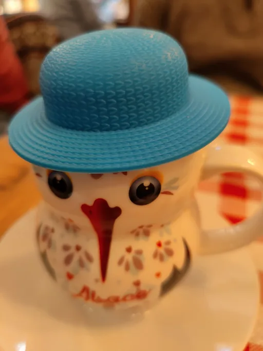

As listas dos «dez melhores restaurantes» envelhecem depressa: os cozinheiros saem, os donos vendem, as ementas mudam. Em Estrasburgo é mais útil perceber aquilo que se mantém mais ou menos igual. Primeiro, os horários dos restaurantes e a tradição local da winstub. Depois, os bairros a explorar e aquilo a que convém prestar atenção antes de escolher mesa.

Audioguia de Estrasburgo ao seu ritmo Acesso imediato
Explorar a cidade por conta própria tem uma vantagem agradável: faz a pausa para almoço quando lhe convém, sem grupo para acompanhar. No audioguia TouringBee há uma paragem na Rue des Moulins em que o guia fala da cozinha local e chama a esta rua a mais perfumada da cidade. O que pedir é explicado no nosso guia sobre o que comer em Estrasburgo. Aqui trata-se de onde e quando.
O essencial num relance
| O que convém saber | |
|---|---|
| Almoço nos restaurantes tradicionais | Cerca das 12h00–14h00 |
| Jantar | Normalmente a partir das 19h00, o último pedido depende do restaurante |
| Por volta das 16h00 | Brasseries, cafés e sítios com a indicação service continu |
| Almoço económico | Menu de almoço (formule midi) ou prato do dia (plat du jour) |
| Longe das ruas turísticas | Krutenau, a leste do centro histórico |
| Reservas | Em dezembro, sobretudo ao fim de semana, nos restaurantes mais procurados do centro |
| Água | Se pedir comida, o jarro de água da torneira (une carafe d'eau) é gratuito |
Horários dos restaurantes e onde comer entre o almoço e o jantar
Em muitos restaurantes tradicionais almoça-se mais ou menos entre o meio-dia e as duas, e o jantar começa por volta das sete. A hora do último pedido depende de cada sítio: um restaurante pode continuar aberto depois de os cozinheiros terem terminado. Entre o almoço e o jantar, muitos sítios não servem nada quente. Mesmo assim, às 16h vai encontrar algo para comer. Procure brasseries, cafés e sítios com serviço contínuo. As padarias são outra boa opção para um lanche rápido.
Antes de se sentar, leia a ementa à entrada. Em França costuma estar afixada lá fora, mas convém confirmar à parte o horário da cozinha. A indicação service continu significa que o sítio serve sem pausa à tarde. Se quiser uma verdadeira refeição quente, pergunte que pratos estão disponíveis a essa hora. Para um almoço económico, procure formule midi ou plat du jour e confirme até que horas vale a oferta.
- O almoço pode compensar mais do que o jantar. Ao almoço, muitos restaurantes oferecem um prato do dia ou um menu de dois ou três pratos a melhor preço do que à carta. Se quiser poupar, faça do almoço a refeição principal.
- Peça para partilhar. A flammekueche é ideal para partilhar. Peça uma para a mesa e depois experimente outra cobertura se todos quiserem mais.
- Gorjeta. O serviço já está incluído na conta, por isso a gorjeta é opcional. Se ficou satisfeito com o serviço, pode arredondar.
- Dinheiro. Algum dinheiro vivo dá jeito no mercado e nos sítios pequenos, embora a maioria dos restaurantes aceite cartão.
O que é uma winstub?
As winstubs eram antigamente sítios simples onde os viticultores alsacianos vendiam o seu vinho e serviam comida caseira para o acompanhar. O nome Winstub significa literalmente «sala do vinho». Hoje, uma winstub é normalmente um restaurante de cozinha tradicional com um ambiente descontraído. Muitas têm uma ementa curta de pratos regionais e salas revestidas a madeira, e o vinho chega em copinhos ou jarros.
As ementas e a decoração variam muito de uma winstub para outra. As toalhas aos quadrados e os copos alsacianos de pé verde são pormenores familiares, mas não se encontram em todo o lado. Criam ambiente, mas nada dizem sobre a qualidade da cozinha. Por isso, na hora de escolher uma winstub, a ementa e as opiniões recentes são mais úteis.

Bairros: onde procurar
Todos estes bairros ficam perto do centro histórico, por isso normalmente não vai precisar de transportes públicos para os conhecer.
A Petite France e a Rue des Moulins: uma zona bonita, mas turística. A Rue des Moulins está cheia de restaurantes, e as suas esplanadas junto à água estão entre as mais disputadas de Estrasburgo. O cenário e a vista podem fazer subir os preços, por isso compare algumas ementas antes de pedir: nas ruelas próximas há muitas vezes opções mais em conta. Pode ler mais sobre o bairro no nosso guia da Petite France.
A Rue Mercière e as ruelas da catedral: uma zona animada, com opções mais sossegadas nas proximidades. A Rue Mercière vai dar diretamente à fachada oeste da catedral, por isso está cheia de visitantes. Na própria rua há bons sítios, mas as ruelas a norte e a leste da Place de la Cathédrale costumam ser mais calmas.
Krutenau: longe das ruas mais movimentadas. Este bairro estudantil fica do outro lado do rio, a leste do centro histórico, a cerca de dez minutos a pé da catedral. A Krutenau está cheia de pequenos restaurantes e bares de vinhos. Pode escolher entre cozinha alsaciana tradicional e internacional, e se estiver atento ao orçamento, compare algumas ementas. Se passou a primeira noite junto aos canais, a segunda é ótima para passar aqui.
Neustadt: mais calmo e moderno. O bairro imperial alemão em torno da Place de la République tem avenidas largas, um ambiente sossegado e restaurantes de todo o tipo.
Place Broglie: produtos frescos. Às quartas e sextas de manhã costuma realizar-se aqui um mercado alimentar. Pão, queijo e enchidos do mercado dão um bom piquenique.
Se a cozinha alsaciana lhe despertar vontade de provar os vinhos locais onde são feitos, saia de Estrasburgo. Pode apanhar o comboio para Colmar e seguir pela Rota dos Vinhos da Alsácia. Os bilhetes de comboio reservam-se facilmente com antecedência. E se quiser visitar várias adegas sem conduzir, uma excursão de vinhos a partir de Estrasburgo é uma opção prática.
Como avaliar um sítio antes de se sentar
Um bom restaurante não se reconhece por um único sinal exterior. Mas a ementa, as opiniões recentes e alguns pormenores à entrada vão ajudá-lo a decidir se fica.
- Quando ver as opiniões. Se um sítio promete dezenas de pratos de cozinhas diferentes, da flammekueche ao sushi, leia algumas opiniões recentes e perceba em que se especializa realmente. Ementas em várias línguas e fotografias dos pratos são comuns nas zonas turísticas e não são necessariamente mau sinal. Mas se alguém à porta insistir muito para que entre, dê primeiro uma vista de olhos aos restaurantes ali perto.
- Em que reparar. Uma ementa curta que muda com as estações e um prato do dia podem ser bons sinais. Uma carta de vinhos com os nomes dos produtores ajuda a perceber melhor a seleção de vinhos do restaurante. Os nomes alsacianos dos pratos mostram a especialidade da casa. Repare também nos clientes, mas lembre-se de que uma sala cheia em pleno centro turístico não garante boa comida.
Reservas e dezembro
Num dia útil normal é muitas vezes mais fácil encontrar mesa sem reserva, sobretudo se chegar no início do serviço de almoço ou de jantar. As winstubs mais procuradas, no entanto, merecem reserva em qualquer época do ano.
Em dezembro, sobretudo ao fim de semana, é melhor reservar com antecedência nos restaurantes mais procurados do centro, por causa das multidões que visitam o mercado de Natal. Se não quiser depender de uma reserva, tenha várias opções em mente, incluindo sítios com serviço contínuo. Chegar no início do serviço de jantar às vezes ajuda a conseguir mesa, mas em dezembro nem isso está garantido.
As sessões plenárias do Parlamento Europeu trazem outro período de grande procura. Nessas semanas chega mais gente a Estrasburgo, os hotéis para essas datas enchem cedo e torna-se mais difícil encontrar mesa livre nos restaurantes mais procurados do centro. Se a sua viagem coincidir com uma sessão, convém reservar o jantar.
Três casos especiais
Vegetarianos. Muitos pratos alsacianos tradicionais levam porco, por isso convém ler a ementa com antecedência. Numa winstub tradicional pode haver apenas uma ou duas opções. Em caso de dúvida, pergunte ao empregado: Est-ce que vous avez des plats végétariens ? («Têm pratos vegetarianos?»). Os restaurantes modernos e os de cozinha internacional costumam oferecer mais escolha. O nosso guia sobre o que comer em Estrasburgo explica que pratos locais funcionam.
Com crianças. A flammekueche resulta bem em família: é fácil de partilhar e pode escolher uma cobertura de que as crianças gostem. Com crianças convém chegar cedo, no início do serviço de jantar, para que a refeição não se prolongue demasiado. Nos restaurantes mais procurados, reserve mesa. Se as crianças tiverem fome a meio da tarde, os sítios com serviço contínuo vão salvar a situação.
Tarde à noite. As winstubs tradicionais fecham muitas vezes a cozinha bastante cedo. Se quiser jantar tarde, procure uma brasserie perto da Place Kléber e da Place Gutenberg ou um sítio na Krutenau. Confirme sempre a que horas a cozinha aceita o último pedido, porque um restaurante aberto não quer dizer que ainda se possa comer lá. É especialmente importante se chegar num comboio tardio.
Estrasburgo com audioguia
O audioguia TouringBee começa na ponte Kuss, a cinco minutos da estação de comboios, percorre todo o centro histórico e termina na igreja de Saint-Paul. Pode iniciar cada gravação ao chegar à paragem, fazer uma pausa para almoçar quando quiser e continuar o percurso depois.
- 33 paragens, cerca de 2,5 horas ao seu ritmo, gravações de 1 a 3 minutos.
- Desde €9,99, pagamento único, um ano de acesso, 8 línguas.
- Descarregue o percurso com antecedência e o mapa e as gravações funcionarão sem ligação à internet.
- O mapa mostra onde está, o que facilita encontrar a paragem seguinte.
Pronto para descobrir Estrasburgo?
Até um bom restaurante pode desiludir se entrar ao acaso precisamente quando a cozinha se prepara para fechar. Por isso, confirme o horário da cozinha, compare ementas e não hesite em explorar uma ruela próxima. Ao almoço, aproveite as ofertas, e em dezembro reserve mesa para o jantar. Assim terá mais hipóteses de encontrar um sítio à sua medida.
Perguntas frequentes
O que é uma winstub?
Um estabelecimento alsaciano tradicional onde antigamente se vendia vinho local com comida caseira. Hoje é normalmente um restaurante de cozinha regional com ambiente descontraído.
Onde comer longe dos turistas?
A Krutenau, o bairro estudantil a leste do centro histórico, tem muitos pequenos restaurantes e bares. A Neustadt, em torno da Place de la République, é mais calma e moderna.
Qual é o horário dos restaurantes?
Os restaurantes tradicionais costumam abrir a cozinha ao almoço e ao jantar, com uma pausa entre os dois. Se quiser comer à tarde, procure sítios com a indicação service continu e pergunte se servem pratos quentes.
Como escolher um bom sítio?
Comece pela ementa à entrada e pelas opiniões recentes. Uma ementa sazonal curta e um prato do dia podem ser bons sinais, mas nenhum deles garante boa cozinha.
Comer na Petite France é caro?
Junto aos canais, a vista pode fazer subir os preços. Compare algumas ementas: nas ruelas próximas há muitas vezes opções mais em conta.
É preciso reservar mesa?
Num dia útil normal, muitas vezes consegue-se mesa sem reserva chegando no início do serviço. Em dezembro, sobretudo ao fim de semana, é melhor reservar nos restaurantes mais procurados do centro.
Como comer bem sem gastar muito?
Escolha um menu de almoço (formule midi) ou o prato do dia (plat du jour). Ou monte um piquenique com produtos de um dos mercados da cidade.
Para continuar a ler
- Guia de Estrasburgo: o essencial sobre a cidade
- A Petite France: o bairro pitoresco com esplanadas junto à água
- Estrasburgo num dia: um roteiro hora a hora, com o almoço à hora certa
- O mercado de Natal de Estrasburgo: porque é que em dezembro as mesas dos restaurantes esgotam depressa
- O centro histórico de Estrasburgo: a Grande Île a pé

O Eugene vive em França há 16 anos e trabalhou como guia turístico antes de fundar a rede de conteúdos de viagem paris10.travel. Escreveu o audioguia da TouringBee sobre Estrasburgo.
Todos os preços e horários desta página são verificados na fonte oficial do ano em curso. Quando um dado ainda não foi publicado, dizemos isso em vez de adivinhar.
Os audioguias TouringBee são um produto nosso. As ligações para o GetYourGuide, o Booking.com e a SNCF Connect são ligações de afiliado. Se reservar através delas, podemos receber uma pequena comissão, sem custos adicionais para si. Estas parcerias nunca influenciam as nossas recomendações.